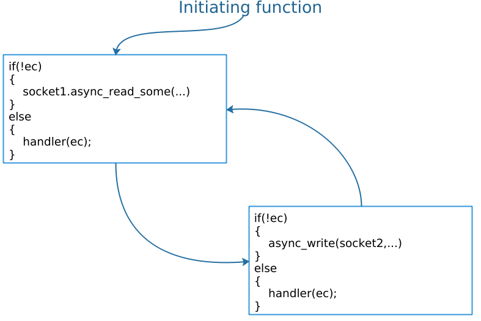

7. Passing the buck: developing efficient abstraction
Asio一个关键的设计目标就是支持高层次抽象的创建. 基本的机制就是异步操作的组成. 在Asio的语境里面，我们把它叫做composed operations.
作为一个例子，假设有一个用户定义的异步操作，从一个socket读取所有的数据传输到另一个socket,初始化的函数应该做如下声明:
template<typename Handler>
void async_transfer(
tcp::socket &socket1, tcp::socket &socket2,
std::array<unsigned char, 1024> &working_buffer,
Handler handler);
这个函数可以按照下面两个异步操作来实现: 从socket1读取数据然后写入socket2中.这些操作都是通过中间的回调函数完成,他们的关系按照下图来表示. 
> These intermediate completion handlers can “pass the buck” by customising the allocation and invocation hooks to simply call the user’s completion handler’s hooks. In this way, the composition has deferred all choices on memory allocation and synchronisation to the user of the abstraction. The user of the abstraction gets to select the appropriate tradeoff between ease of use and efficiency, and does not need to pay for any synchronisation cost if explicit synchronisation is not required（TODO）.
Asio提供了一系列随手可用的这种操作，比如下面几个非成员函数async_connect() async_read(),async_write()和async_read_until(). 相关的组合的操作也会在对象buffered_stream<>和ssl::stream<>中.